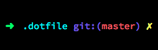
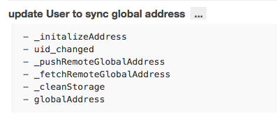

--system #系统级别
--global #用户全局
--local #单独一个项目
git config --global user.name "xxxx" #用户名
git config --global user.email "xxxx@xxx.com" #邮箱
git config --global core.editor vim #编辑器
git config --global alias.st status #按这种方法，配置别名
git config -l #列举所有配置
- git init
- git clone <url> [path]
- git pull <remote> <branch>
- git add
- git push <remote> <branch>
- git diff
- git diff <file> #比较工作区与暂存区文件的差异
- git diff --cached # 比较暂存区和版本库差异
- git diff $id1 $id2 # 比较两次提交之间的差异
- git diff branch1 branch2 # 在两个分支之间比较
zsh

git clone http://github.com/Treri/dotfile ~/.dotfile
cd ~/.dotfile
./install.sh zsh_rc
git add .
git add -A
git commit (without -m)
commit log ==> commit summary
commit log <= 72 colums
# feature complete
git checkout develop
git pull origin develop
git merge --no-ff feature/one
git commit # in local branch
git checkout feature/one
git pull origin feature/one
git checkout feature/one_local
git rebase feature/one
git checkout feature/one
git merge feature/one_local # without `--no-ff`
1. 保持commit历史记录线性
2. 保持分支的产生和合并信息